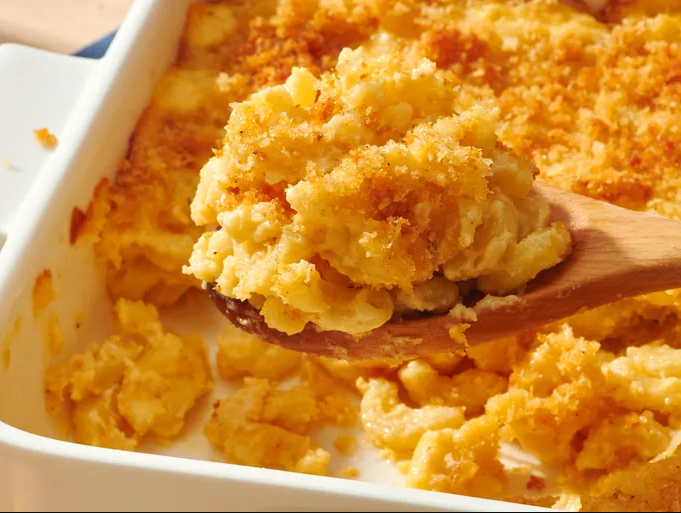

Homemade Mac and Cheese

Description
This homemade mac and cheese is topped with buttered bread crumbs for pure comfort food.
It's easy to make the cheese sauce from scratch, starting with a roux and adding milk,
Cheddar, and Parmesan to make a rich, decadent sauce that coats every nook and cranny of
the macaroni noodles. Skip the boxed stuff and make homemade mac and cheese tonight.
This from-scratch macaroni and cheese recipe will become a staple in your dinner rotation.
This homemade mac and cheese recipe uses a classic mixture of sharp Cheddar and Parmesan.
Cheddar is a fantastic base, while Parmesan adds a more complex and salty flavor. Of course,
you can adapt this recipe to suit your taste: Gruyère, Monterey Jack, and Gouda are all great
options for macaroni and cheese.
Ingredients - Macaroni and Cheese
- 8 ounces uncooked elbow macaroni
- 1/4 cup salted butter
- 3 tablespoons all-purpose flour
- 3 cups milk, divided, or as needed
- 2 cups shredded sharp Cheddar cheese
- 1/2 cup finely grated Parmesan cheese
- salt and ground black pepper to taste
Ingredients - Bread Crumb Topping
- 2 tablespoons salted butter
- 1/2 cup dry bread crumbs
- 1 pinch ground paprika
Steps
- Preheat the oven to 350 degrees F (175 degrees C). Grease an 8-inch square baking dish.
- Bring a large pot of lightly salted water to a boil. Add macaroni and cook, stirring
occasionally, until tender yet firm to the bite, about 8 minutes. Drain and transfer to
the prepared baking dish.
- Meanwhile, melt butter in a medium skillet over low heat. Whisk in flour until the mixture
becomes paste-like and light golden brown, 3 to 5 minutes.
- Gradually whisk in 2 1/2 cups milk, bring to a simmer.
- Stir in Cheddar and Parmesan cheeses; season with salt and black pepper. Cook and stir over
low heat until cheeses are melted and sauce has thickened, 3 to 5 minutes, adding up to the
remaining 1/2 cup milk if needed.
- Pour cheese sauce over macaroni; stir until well combined.
- Melt 2 tablespoons butter in a skillet over medium heat. Add bread crumbs; cook and stir
until well coated and browned.
- Spread bread crumbs over macaroni and cheese; sprinkle with paprika.
- Bake in the preheated oven until topping is golden brown and macaroni and cheese is gooey
and bubbling, about 30 minutes.
Home